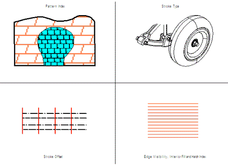

| Source image | Reference image |
|---|---|
 |
| Execute test | Purpose | Test Result | Comments |
| Applying 2.1 Style Properties using XCF: | See reference image | The two patterns are swapped. The wheel should be drawn using solid lines. The two bottom horizontal lines should have an offset. The rectangle should be filled with horizontal lines and the blue edge hidden. |